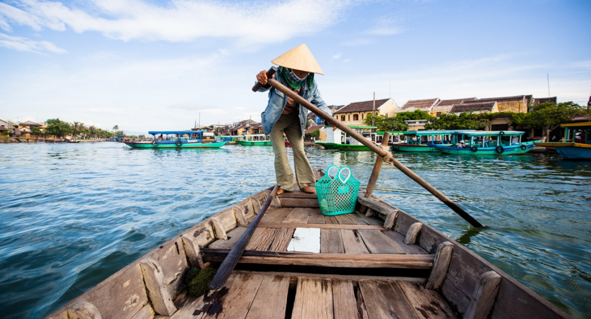
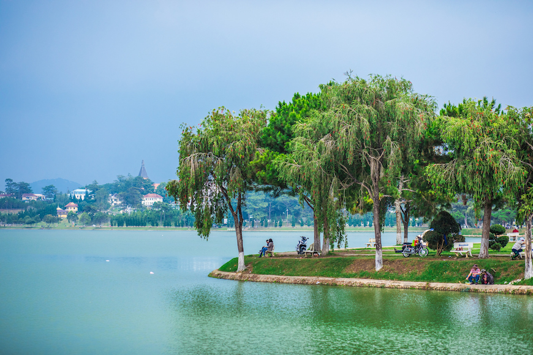
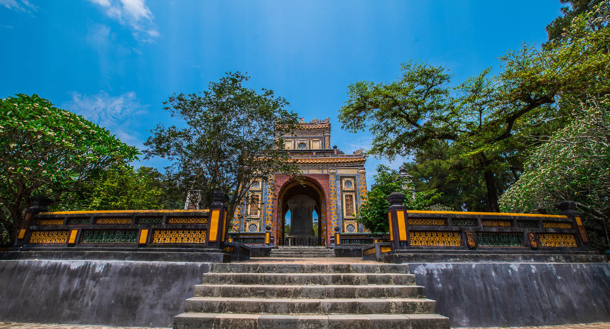

Hoi An is a place where the bold march of progress peters into a leisurely amble.
In this one-time trading port, the Thu Bon River meanders past crumbling shop houses and weathered pagodas,
while sampans come and go from the old ferry quay. Outside the Old Town, two-lane roads slice through waving
rice fields and emerge at a frothy coastline.
Stay a couple of days, and Hoi An's easygoing beauty and lantern-lit nights may leave you hopelessly beguiled.
Hoi An

Hidden away in the Central Highlands, Da Lat plays the cooler cousin to Vietnam's seaside destinations.
Famous for its countryside charm, Da Lat draws couples, wellness seekers and outdoor enthusiasts.
This mountain resort town was once a summer getaway for the French, who left their mark in the European-inspired architecture and countless lakes.
Da Lat's main lake is the centre of the action, but amazing natural wonders await in the hills all around.
Da Lat

Hue is a city chock-full of stories. The Kings of the Nguyen Dynasty built their feudal capital along Hue’s fertile riverbanks and atop its forested
hills, but their imperial legacy is just one of many reasons to visit. Hue’s refined cuisine is the stuff of legend, and its leafy streets are line with mossy
pagodas, art déco mansions, and eye-popping markets. Through the whole scene flows the Perfume River, setting a languid pace the rest of the city is
happy to follow.
Hue